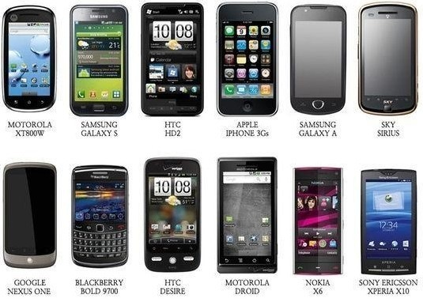

스마트폰
스마트폰은 컴퓨터를 결합한 무선 휴대전화기이다. PC에서 실행되는 운영체제보다 작게 만든 모바일 운영체제를 탑재하여 인터넷 검색, 전자우편, 간단한 문서 편집, 카메라, 오디오 및 비디오 재생 등 PC의 기능을 거의 모두 갖추고 있다.
목차
역사
안드로이드폰
아이폰
샘플
역사
스마트폰의 기원은 1990년대 초반으로 거슬러 올라갑니다. 그 당시에는 개인용 전자기기와 휴대폰이 별개로 존재했습니다. 하지만 1992년에 IBM이 개발한 Simon Personal Communicator라는 기기가 최초의 스마트폰으로 소개되었습니다. Simon은 전화 통화, 이메일, 팩스, 달력 등의 기능을 갖추고 있었습니다.
안드로이드
Android는 Linux 커널을 기반으로 Google에서 제작하고 있는 범용 모바일 운영 체제와 미들웨어 및 중요 애플리케이션이 포함된 배포판이다. Google은 새로운 운영 체제의 버전 공개와 동시에 소스를 공개하고 있다. 이렇게 공개된 소스를 AOSP라고 한다.
아이폰
아이폰(영어: iphone)은 2007년 1월 9일, 애플이 발표한 휴대 전화 시리즈이다. 미국 샌프란시스코에서 열린 맥월드 2007에서 애플의 창업자 중 한명인 스티브 잡스가 발표했다.
샘플
<스마트폰 샘플>
